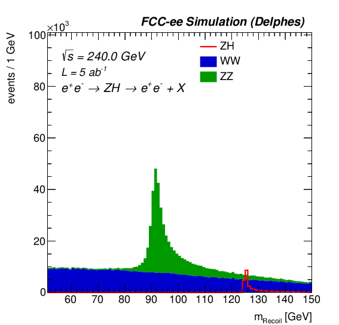
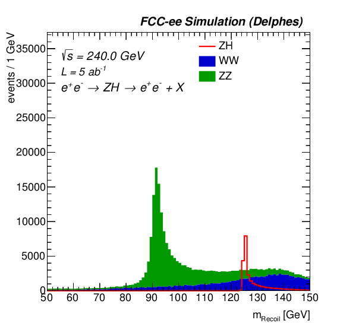
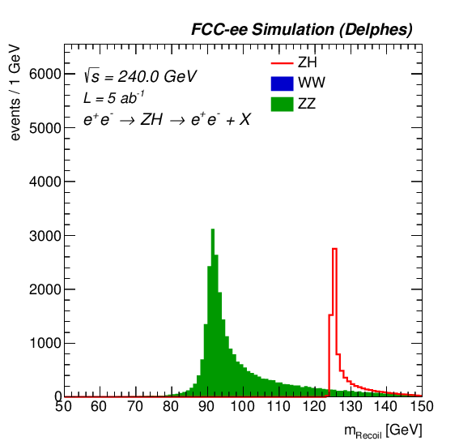
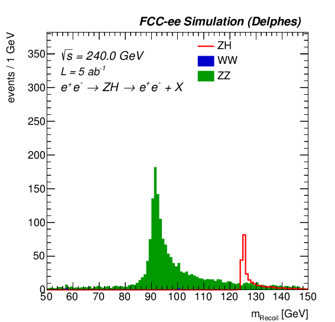

2.3. FCC-ee: Getting started with analysing simulated physics events¶
2.3.1. Overview¶
The FCC software is the common software for the FCC detector design study. We support the whole chain starting from event generation through parameterized and full detector simulation, reconstruction and data analysis.
2.3.2. Installation¶
For this tutorial the software needs to be locally installed. Create a directory for this tutorial and go there:
mkdir FCCeePhysics
cd FCCeePhysics
Clone the repository and go there:
git clone https://github.com/HEP-FCC/FlatTreeAnalyzer.git
cd FlatTreeAnalyzer
then initialize:
source ./init.sh
2.3.3. Instructions¶
Analyses are run the following way:
./bin/analyze.py -n [analysis_name_in_heppy] -c [heppy_cfg] -t [heppy_tree_location] -o [output_dir] -p [analysis_parameters] -j [proc_dict]
The example we will run here for the ZH with Z to electrons is:
./bin/analyze.py -n ZH_Zee -c /eos/project/f/fccsw-web/www/share/tutorials/FcceeAnalysis/FCCSW_WS/heppy/ZH_Zee/analysis.py -t /eos/project/f/fccsw-web/www/share/tutorials//FcceeAnalysis/FCCSW_WS/data/ZH_Zee/ -o outputs/ZH_zee_ecm240_recoil/ -p templates/FCCee/zh_zee_ecm240_recoil.py -j /eos/project/f/fccsw-web/www/share/tutorials/FcceeAnalysis/FCCSW_WS/dict/FCCee_procDict_fcc_v01.json --nev 50000 -m
The example we will run here for the ZH with Z to muons is:
./bin/analyze.py -n ZH_Zmumu -c /eos/project/f/fccsw-web/www/share/tutorials/FcceeAnalysis/FCCSW_WS/heppy/ZH_Zmumu/analysis.py -t /eos/project/f/fccsw-web/www/share/tutorials/FcceeAnalysis/FCCSW_WS/data/ZH_Zmumu/ -o outputs/ZH_zmumu_ecm240_recoil/ -p templates/FCCee/zh_zmumu_ecm240_recoil.py -j /eos/project/f/fccsw-web/www/share/tutorials/FcceeAnalysis/FCCSW_WS/dict/FCCee_procDict_fcc_v01.json --nev 50000 -m
The files that will need to be edited are templates/FCCee/zh_zee_ecm240_recoil.p for the Z boson decaying to electrons and templates/FCCee/zh_mumu_ecm240_recoil.py for the Z boson decaying to muons.
Different selections are alrready implemented at the end of the files: selbase with no cut, selopt that tries to optimise based on some variables, selbb that only selects events with exactly 2 b-jets in the recoil, seltautau that only selects events with exactly 2 tau-jets in the recoil, selWhadWhad that only selects events with exactly 4 jets in the recoil, selWhadWlep that only selects events with exactly 2 jets and one lepton in the recoil, selWlepWlep that only selects events with exactly 2 leptons in the recoil and selWW that is a logical or between the various W boson selections.
Then let’s run the Z->ee+X analysis with only 50 000 events
./bin/analyze.py -n ZH_Zee -c /eos/project/f/fccsw-web/www/share/tutorials/FcceeAnalysis/FCCSW_WS/heppy/ZH_Zee/analysis.py -t /eos/project/f/fccsw-web/www/share/tutorials/FcceeAnalysis/FCCSW_WS/data/ZH_Zee/ -o outputs/ZH_zee_ecm240_recoil/ -p templates/FCCee/zh_zee_ecm240_recoil.py -j /eos/project/f/fccsw-web/www/share/tutorials/FcceeAnalysis/FCCSW_WS/dict/FCCee_procDict_fcc_v01.json --nev 50000 -m
and look at the plots in outputs/ZH_zee_ecm240_recoil/plots_ZH/. The selections are ordered respecting how they have been added in the configuration file, and the plots for selection 0==selbase to 7===selWW should look more or less like those (that have been produced with all the statistics).




2.3.4. Exercises¶
What you can do for example now, is add a new selection that will select events with 2 photons in the recoil (the variable is nph), comment all the other selection except this new one and run over the full statistics by removing the --nev 50000 in-line argument.
Then you can also try to further optimise the selection by looking at other variables (check them in the input tree /eos/project/f/fccsw-web/www/share/tutorials/FcceeAnalysis/FCCSW_WS/data/ZH_Zee/p8_ee_ZZ_ecm240/FCCeeAnalyses.ZH_Zee.TreeProducer.TreeProducer_1/tree.root )
Then you can also do the same with the Z-> mumu analysis.